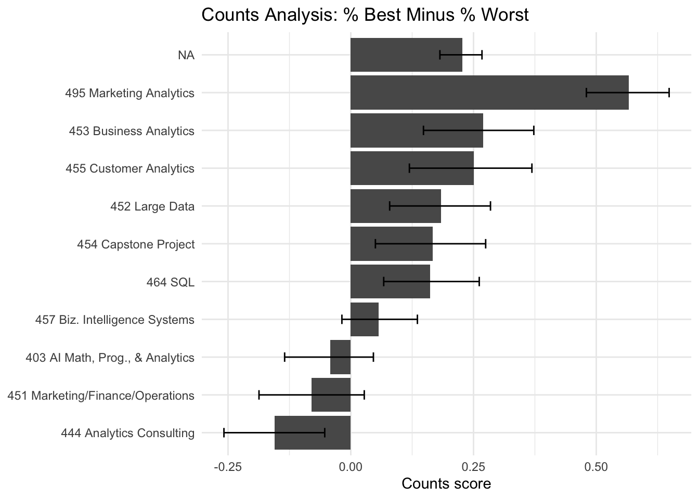
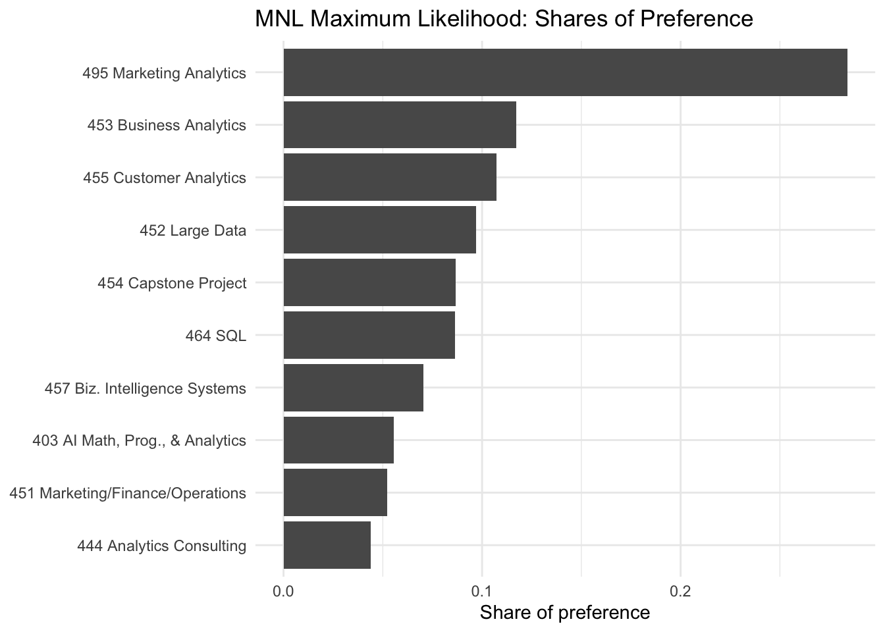
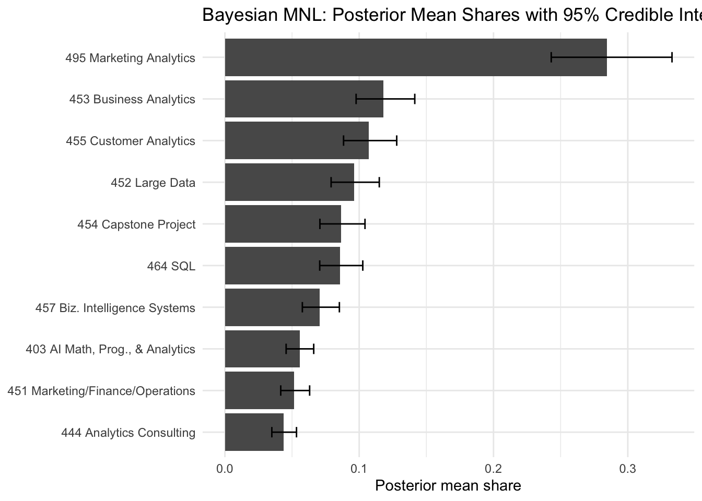

Counts, MLE, and Bayesian estimation of the MNL model
Author
Yangzi He
Published
May 25, 2026
Code
library(tidyverse)library(knitr)library(stringr)set.seed(123)data_path <-"maxdiff_design_and_choices.csv"label_path <-"maxdiff_item_labels.csv"logsumexp <-function(x) { m <-max(x) m +log(sum(exp(x - m)))}short_label <-function(x) { x |>str_replace("MGTA ", "") |>str_replace(" \\(.*", "")}
Introduction
MaxDiff, also called Best-Worst Scaling, is a survey method for measuring relative preferences. In each task, respondents see a small set of alternatives and choose the item they like most and the item they like least. This is useful because people are often better at making trade-offs than at assigning consistent numerical ratings on a 1–10 scale. A rating scale can be affected by scale-use bias, while MaxDiff forces respondents to differentiate between options.
In this assignment, the alternatives are ten core MSBA classes at UCSD Rady. I estimate class preferences in three ways: a simple counts analysis, a multinomial logit model estimated by maximum likelihood, and the same multinomial logit model estimated using Bayesian Metropolis-Hastings simulation. I expect the broad ranking of classes to be similar across the three approaches, especially for the most and least preferred classes. The main difference is that the model-based methods give a more formal interpretation of preference strength and uncertainty.
The Data
Code
raw <-read_csv(data_path, show_col_types =FALSE)labels <-read_csv(label_path, show_col_types =FALSE)names(raw) <-c("record_id", "task", "position", "item", "response")names(labels)[1:2] <-c("item", "label")labels <- labels |>select(item, label)dat <- raw |>mutate(record_id =as.character(record_id),task =as.integer(task),position =as.integer(position),item =as.integer(item),response =as.integer(response) ) |>left_join(labels, by ="item")
Code
N <-n_distinct(dat$record_id)T_per_respondent <- dat |>distinct(record_id, task) |>count(record_id, name ="tasks") |>summarise(tasks_per_respondent =mean(tasks)) |>pull(tasks_per_respondent)J_per_task <- dat |>count(record_id, task, name ="items_shown") |>summarise(items_per_task =mean(items_shown)) |>pull(items_per_task)J_total <-n_distinct(dat$item)tibble(respondents = N,tasks_per_respondent = T_per_respondent,items_per_task = J_per_task,total_items = J_total) |>kable(digits =2)
shown_counts <- dat |>count(item, label, name ="times_shown") |>arrange(item)shown_counts |>kable()
item
label
times_shown
1
MGTA 403 AI Math, Prog., & Analytics (Summer with Nijs)
332
2
MGTA 464 SQL (Summer with Nijs)
340
3
MGTA 451 Marketing/Finance/Operations (Summer with Wilbur/Buti/Shin)
326
4
MGTA 452 Large Data (Fall with Hansen)
338
5
MGTA 453 Business Analytics (Fall with August)
327
6
MGTA 444 Analytics Consulting (Winter with Peterson)
323
7
MGTA 455 Customer Analytics (Winter with Nijs)
335
8
MGTA 454 Capstone Project (Spring with Advisor)
330
9
MGTA 495 Marketing Analytics (Spring with Yavorsky)
330
10
MGTA 457 Biz. Intelligence Systems (Fall with Schibler)
334
11
NA
595
The data contain 85 respondents. Each respondent completed about 15 tasks, each task displayed 3.0666667 items, and the study included 11 total classes. The sanity check confirms whether every task has exactly one best choice, one worst choice, and two unchosen items.
Counts Analysis
The counts analysis is a quick descriptive way to summarize the MaxDiff data. For each item, I compute how often it was selected as best and how often it was selected as worst, each divided by the number of times the item appeared. The score is % best - % worst. A positive score means the class was more often chosen as best than worst, while a negative score means it was more often chosen as worst than best.
ggplot(counts, aes(x = counts_score, y =reorder(short, counts_score))) +geom_col() +geom_errorbar(aes(xmin = counts_low, xmax = counts_high), width =0.25) +labs(title ="Counts Analysis: % Best Minus % Worst",x ="Counts score",y =NULL ) +theme_minimal()

The highest bars are the classes most often selected as best relative to worst. The lowest bars are the classes that students tended to choose as least preferred. The confidence intervals help show whether apparent differences are large or whether several middle-ranked classes are statistically close to each other.
From MaxDiff Data to MNL Choices
The MaxDiff survey can be represented as a sequence of multinomial logit choices. For each task, the respondent first chooses the best item from the four displayed items. Then, conditional on the best item being removed, the respondent chooses the worst item from the remaining three. The MNL model assigns each class a utility coefficient \(\beta_j\). Higher \(\beta_j\) means higher preference. Because adding a constant to all utilities does not change logit probabilities, one coefficient must be fixed for identification. I set \(\beta_1 = 0\) and estimate \(\beta_2, \ldots, \beta_{10}\).
For each task, the log-likelihood contribution is the log probability of the observed best choice plus the log probability of the observed worst choice from the remaining items with utilities reversed.
MGTA 495 Marketing Analytics (Spring with Yavorsky)
1
495 Marketing Analytics
5
0.7445
0.1418
0.1171
MGTA 453 Business Analytics (Fall with August)
2
453 Business Analytics
7
0.6563
0.1424
0.1072
MGTA 455 Customer Analytics (Winter with Nijs)
3
455 Customer Analytics
4
0.5553
0.1399
0.0969
MGTA 452 Large Data (Fall with Hansen)
4
452 Large Data
8
0.4433
0.1397
0.0867
MGTA 454 Capstone Project (Spring with Advisor)
5
454 Capstone Project
2
0.4380
0.1373
0.0862
MGTA 464 SQL (Summer with Nijs)
6
464 SQL
10
0.2359
0.1370
0.0704
MGTA 457 Biz. Intelligence Systems (Fall with Schibler)
7
457 Biz. Intelligence Systems
1
0.0000
NA
0.0556
MGTA 403 AI Math, Prog., & Analytics (Summer with Nijs)
8
403 AI Math, Prog., & Analytics
3
-0.0666
0.1395
0.0520
MGTA 451 Marketing/Finance/Operations (Summer with Wilbur/Buti/Shin)
9
451 Marketing/Finance/Operations
6
-0.2388
0.1406
0.0438
MGTA 444 Analytics Consulting (Winter with Peterson)
10
444 Analytics Consulting
Code
ggplot(mle_tbl, aes(x = mle_share, y =reorder(short, mle_share))) +geom_col() +labs(title ="MNL Maximum Likelihood: Shares of Preference",x ="Share of preference",y =NULL ) +theme_minimal()

The MLE shares translate the estimated utilities into a more intuitive scale. They sum to one and can be interpreted as predicted preference shares if all ten classes appeared together. The MLE ranking should be similar to the counts ranking, but it can differ because MNL uses the full structure of the choice set rather than only the best and worst percentages.
MNL via Bayesian Estimation
For the Bayesian model, I use the same likelihood and add a weakly informative normal prior, \(\beta_k \sim N(0, 10)\) for the nine free coefficients. I sample from the posterior using a random-walk Metropolis-Hastings algorithm.
MGTA 495 Marketing Analytics (Spring with Yavorsky)
1
495 Marketing Analytics
5
0.7468
0.5085
1.0047
0.1180
0.0977
0.1414
MGTA 453 Business Analytics (Fall with August)
2
453 Business Analytics
7
0.6511
0.3904
0.9172
0.1072
0.0884
0.1279
MGTA 455 Customer Analytics (Winter with Nijs)
3
455 Customer Analytics
4
0.5437
0.2933
0.8199
0.0963
0.0791
0.1150
MGTA 452 Large Data (Fall with Hansen)
4
452 Large Data
8
0.4359
0.1803
0.7088
0.0865
0.0707
0.1043
MGTA 454 Capstone Project (Spring with Advisor)
5
454 Capstone Project
2
0.4296
0.1836
0.7034
0.0859
0.0706
0.1027
MGTA 464 SQL (Summer with Nijs)
6
464 SQL
10
0.2312
-0.0127
0.4948
0.0705
0.0577
0.0852
MGTA 457 Biz. Intelligence Systems (Fall with Schibler)
7
457 Biz. Intelligence Systems
1
0.0000
0.0000
0.0000
0.0559
0.0456
0.0661
MGTA 403 AI Math, Prog., & Analytics (Summer with Nijs)
8
403 AI Math, Prog., & Analytics
3
-0.0794
-0.3382
0.1877
0.0517
0.0416
0.0631
MGTA 451 Marketing/Finance/Operations (Summer with Wilbur/Buti/Shin)
9
451 Marketing/Finance/Operations
6
-0.2484
-0.5060
0.0275
0.0437
0.0349
0.0533
MGTA 444 Analytics Consulting (Winter with Peterson)
10
444 Analytics Consulting
Code
ggplot(bayes_tbl, aes(x = bayes_share, y =reorder(short, bayes_share))) +geom_col() +geom_errorbar(aes(xmin = share_low, xmax = share_high), width =0.25) +labs(title ="Bayesian MNL: Posterior Mean Shares with 95% Credible Intervals",x ="Posterior mean share",y =NULL ) +theme_minimal()

The posterior means should be close to the MLE estimates because the prior is weak and the data are informative. The advantage of the Bayesian approach is that uncertainty for derived quantities such as shares is easy to compute by transforming every posterior draw.
The three methods usually agree most clearly at the top and bottom of the ranking. Differences are more likely in the middle, where several classes may have similar preference levels and small sampling noise can change the order. Counts analysis is easy to explain and useful for a fast summary. MNL adds a formal choice model and uses the structure of each choice set. Bayesian MNL gives a natural way to quantify uncertainty in transformed outcomes such as preference shares.
Discussion
Substantively, the results show which MSBA classes students prefer most and least in this sample. For a non-technical audience, the main takeaway is the ranking of classes and the size of the gaps between them, not just whether one class is ranked slightly above another. When intervals overlap strongly, I would avoid over-interpreting small rank differences.
Methodologically, the counts approach is best for a quick descriptive dashboard. The MLE MNL approach is better when I need rigorous point estimates and standard errors from a choice model. The Bayesian MNL approach is most useful when I want uncertainty intervals for shares or when I plan to extend the model to more complex settings, such as individual-level preference heterogeneity.
A caveat is that the survey reflects a self-selected sample of students and may not generalize to every MSBA student. Preferences may also depend on students’ prior coursework, career goals, and when they took or expect to take each class. With more time, I would explore whether preferences differ by student background or career interests.